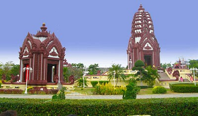
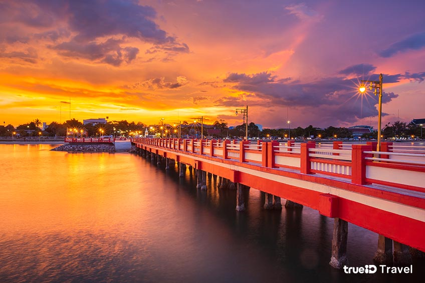

วางแผนเที่ยวเมืองประจวบคีรีขันธ์ 1 วัน
เที่ยวทะเล ชมวิว และสัมผัสบรรยากาศเมืองประจวบฯ แบบวันเดียว

08:00 น. – เขาช่องกระจก
เริ่มต้นวันด้วยการเที่ยวชมวิวเมืองและธรรมชาติ พร้อมเก็บภาพความประทับใจ

10:00 น. – ศาลหลักเมืองประจวบคีรีขันธ์
แวะชมสถานที่สำคัญของเมือง และเรียนรู้เกี่ยวกับความเป็นมาของเมืองประจวบฯ

12:00 น. – รับประทานอาหารกลางวัน
พักรับประทานอาหารกลางวัน ลองชิมอาหารทะเลและอาหารท้องถิ่น

14:00 น. – อ่าวมะนาว
พักผ่อนริมชายหาด เดินเล่น รับลมทะเล และชมธรรมชาติ

16:30 น. – สะพานสราญวิถี
เดินชมวิวทะเล ถ่ายภาพบรรยากาศช่วงเย็น และปิดท้ายทริปอย่างสบาย ๆ